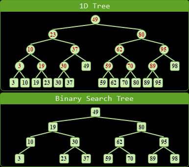
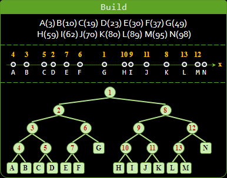
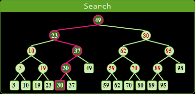
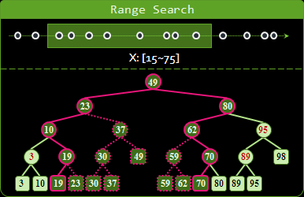
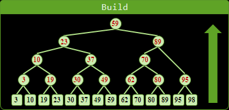
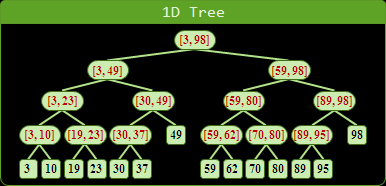
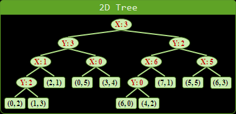
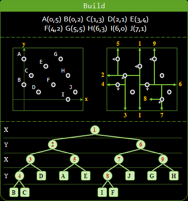
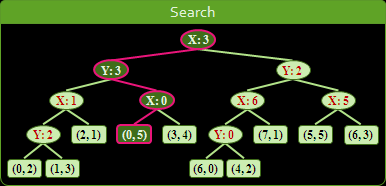
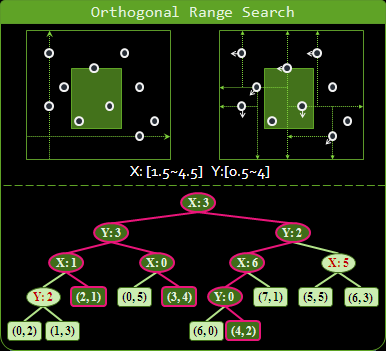

摘要
| build | build | search | orthogonal
| time | space | (ins/del) | range search
-----------+------------+------------+------------+--------------
KD Tree | O(NlogN) | O(N) | O(logN) | O(N1-1/D + K)
Range Tree | O(NlogD-1N) | O(NlogD-1N) | O(logDN) | O(logDN + K)
k維樹
大量儲存多維平面上的點，並且依照地緣關係來排序。常縮寫為KD Tree。以下分別介紹一維和二維的情形。
一維KD Tree

1D Tree的原理與Binary Search Tree十分類似，但是長相卻有點不同。在1D Tree當中，資料全部集中在樹葉；得補一些數據到內部節點，才能做搜尋。
一維KD Tree：建立

建立的方法，是把數線上的點分為左右兩等份，然後分別遞迴下去。習慣上是挑中位數位置的點作為分割點，分割點劃分於左側。
求分割點時，是使用時間為O(N)的求中位數演算法，而不是使用時間為O(NlogN)的排序演算法，才能達到理論上的時間複雜度。然而實際上排序演算法比較容易實作，效率也不錯。
時間複雜度為O(NlogN)，空間複雜度為O(2N - 1) = O(N)。
一維KD Tree：插入、刪除、搜尋

插入、刪除、搜尋的方式跟Binary Search Tree的概念完全相同，時間複雜度都是O(logN)。
一維KD Tree：大範圍搜尋

有一個重要的應用，是找出一個區間裡面所有的點。概念上是以搜尋範圍的左、右邊界值，分別搜尋一次，途中順便遍歷符合搜尋範圍內的子樹。
真正在實作時，則是同時以搜尋範圍的左、右邊界值進行搜尋：甲、如果搜尋完全落在分割點的其中一側，那麼就依照二元搜尋樹的規則繼續搜尋；乙、如果搜尋範圍橫跨分割點，那麼左右子樹都要搜尋；丙、如果搜尋範圍包含一整條分割區段，就可以直接遍歷整棵子樹，也可以當作是乙的情況來處理。
時間複雜度是O(2*logN + 2*K-1) = O(logN + K)，K為區間裡面的點數目。
延伸閱讀：另外一種建立一維KD Tree的方式

1D Tree另外有一種獨特的建樹方式：先排序所有資料，需時O(NlogN)，然後再以bottom-up順序建立1D Tree，需時O(2N - 1) = O(N)。整體的時間複雜度仍相同。
讀者可能會想：既然要先排序，那乾脆就把資料放到陣列，排序完之後，直接二分搜尋不就好了，幹嘛需要1D Tree呢？你想的沒錯，一維的情況下，資料又不會變動時，的確沒有這個必要。
延伸閱讀：內部節點有兩種紀錄方式

內部節點有兩種紀錄方式。基本的方式是紀錄分割點座標，這是仿照Binary Search Tree的原理；進階的方式是紀錄其下所有樹葉的數值範圍，實作起來會複雜一點。這兩種紀錄方式也可以同時使用。
採用進階的方式有一個好處：可以允許樹葉當中有許多相同座標的點。如此一來，座標相同的點就能進行左右兩等份，閃避了分割點的二元搜尋規則。
一般來說，KD Tree沒有必要使用進階的方式。在Range Tree當中，才有必要用到進階的方式。
二維KD Tree

兩個維度依序作為等分的依據，輪流遞迴下去。
二維KD Tree：建立

先以垂直線，把平面上的點分為左右兩等份，左右兩區域各自再以水平線，將平面上的點等分為上下兩等份。垂直、水平如此不斷輪流遞迴下去，直到每個區域都只剩一個點。
時間複雜度為O(NlogN)。空間複雜度為O(2N - 1) = O(N)。
二維KD Tree：插入、刪除、搜尋

插入、刪除、搜尋的方式跟Binary Search Tree的概念完全相同，時間複雜度都是O(logN)。
二維KD Tree：大範圍搜尋

有一個重要的應用，是找出一個長方形範圍裡面所有的點：甲、如果搜尋範圍完全落在分割線的其中一側，那麼就依照二元搜尋樹的規則繼續搜尋；乙、如果搜尋範圍橫跨分割線，那麼左右子樹都要搜尋；丙、如果搜尋範圍包含一整塊分割區域，就可以直接遍歷整棵子樹，也可以當作是乙的情況來處理。
搜尋時，垂直方向最多遇到O(sqrtN)個區域，水平方向最多遇到O(sqrtN)個區域，因此搜尋的時間複雜度是O(2*sqrtN + 2K-1) = O(sqrtN + K)，K為長方形裡面的點數目。
高維KD Tree
建立時間為O(NlogN)，建立空間為O(N)，插入、刪除、搜尋的時間為O(logN)，搜尋D體形範圍的時間為O(N1-1/D + K)。